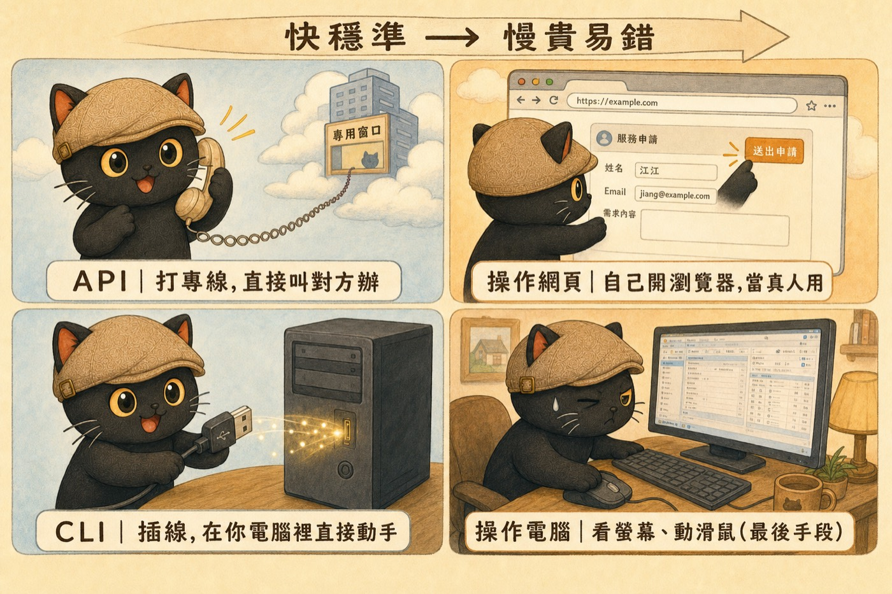

這篇在講什麼
現在的 AI Agent 已經能直接操作你的軟體。這篇把它接軟體的四種方式翻成白話，配上我實際用 Codex 的例子，告訴你哪些事可以直接交辦、又該怎麼判斷用哪一種，不用自己一步一步動手。
· 想用 AI 幫忙做事，但一看到 API、CLI、MCP 就卡住的知識工作者
· 已經在用 Codex、Claude 這類 AI Agent，想搞懂它到底怎麼幫你操作軟體的人
· 一人公司、主管、老闆，想知道哪些工作可以交給 AI、又該怎麼交
· 看懂 AI 接軟體的四種方式，各自的特性與適用情況
· 拿到一個「該用哪一種接法」的判斷順序，遇到任務直接套
· 知道幾個可以立刻開始的做法，把自己從操作員換到交辦者的位置
先搞清楚一件事：AI 已經會「動手」了
很多人對 AI 的印象還停在「它會聊天、會寫字」。但現在的 AI Agent 已經會直接動手操作軟體：去 LINE 群組抓資料、把逐字稿撈出來整理、把網站部署上線，甚至半夜接手卡住的任務。
它怎麼做到的，關鍵在它跟那個軟體之間用哪一種方式連上。連法不同，能做的事、穩不穩、要不要你在旁邊盯著，差很多。
你不需要背這些連法的技術名稱。你要知道的是它們大概怎麼運作，這樣才判斷得出來：一件事能不能直接交給 AI，又該怎麼交。
AI 接軟體的四種方式
我用生活語言講一遍，每一種都配上我自己實際用 Codex 做過的事。
軟體有開孔（協議），AI 就能直接讀寫它的資料，像打一條專線給對方。我的 Mika LINE 官方帳號就是這樣：它每天早晚自動把群組名稱整理成看得懂的樣子、把大家丟進群組的圖片、PDF、簡報一次抓回來存檔，我只要照常在群組裡聊天就好。
在你自己的電腦裡用幾行指令直接動手，像插一條線。我用它讓一個 AI 去叫另一個 AI：寫完的東西讓 Codex 叫 Claude 回頭檢查；也用它一個指令同時派幾個 AI 去查同一個主題，再把結果合起來。官網要更新時，也是用幾行指令把網站推上線。
AI 像真人一樣打開瀏覽器，一步一步點按鈕、填欄位。碰到只能在網頁後台操作、又沒開放協議的工具，它就自己登入、自己點。因為要照畫面走，所以慢一點，也比較容易卡住。
AI 盯著整個螢幕、移動滑鼠，完全模擬一個真人坐在電腦前。我把它當最後手段：有一次我半夜撞到用量上限、任務卡住，就讓 Codex 凌晨自己醒來，看著畫面把卡住的任務按下去繼續跑。能用前面三種，就不會用這一種。

那我怎麼判斷該用哪一種？
遇到一個任務，可以照這個順序問下去：
- 這個軟體有沒有開協議，AI 能不能直接連？
- 不行的話，能不能用命令列在電腦裡直接做？
- 再不行，才讓 AI 自己去網頁上點。
- 都不行，最後才用看螢幕、動滑鼠的方式。
你不用自己判斷到那麼細。我實際的做法，是直接把任務丟給 AI，加一句：你去查這件事能不能直接接、能不能做得比我想的更好，接不上再退一步。
MCP 是 AI 世界的 USB
前面說「軟體有沒有開孔讓 AI 接」，這就是 MCP 在做的事。
有 MCP，代表這些插孔被統一成一種比較好接的規格。
對 AI 來說，規格統一之後，串工具的難度跟成本都會往下掉。
所以 MCP 就像 AI 世界的 USB。USB 出現以前，每一種裝置都有自己的接頭，滑鼠一種、印表機一種，換一台就要找對應的線。USB 把接頭統一之後，插上去就能用。MCP 對 AI 來說是同一件事：把各種工具的接法統一成一個規格，AI 要串新工具就容易很多。
我桌上一堆工具，像行事曆、Gmail、雲端硬碟、筆記軟體，現在愈來愈多都被統一成這種規格，AI 一條線就接上。還沒被統一、或根本沒開協議的，AI 就只能退回去自己開畫面慢慢點。差別就在這裡（這就是最上面那張封面圖在說的事）。
知識工作者可以怎麼用這篇
講完原理，回到你身上。你不用變成工程師，但可以開始這樣做：
- 先盤點你每天重複在哪些軟體上做白工，例如貼資料、整理、轉檔、把東西在不同工具之間搬來搬去。
- 對每一件，問 AI 一句：這件事你能不能直接接我的某個軟體幫我做，用哪一種接法？
- 像行事曆、Gmail、雲端硬碟這種有開協議的，優先交出去，這類最穩。
- 轉檔、撈逐字稿、抓資料這種粗活，讓它在電腦裡用命令列或本地工具做，不用你盯著。
- 真的只能靠看畫面操作的，當最後手段，而且自己再檢查一遍。
講幾個我自己的前後對照：
以前重要訊息和檔案散在群組裡，要找老半天。現在 AI 每天早晚自動整理、把檔案抓下來歸檔。
以前一句一句聽打。現在我截一張圖給 AI，它自己把逐字稿撈出來、分好是誰講的、清掉聽錯的字。
以前改個東西要記一長串步驟。現在用幾行指令推上線，AI 還會自己驗證有沒有成功。
你要練的不是按鈕
講到這裡，我想把整篇收回到我自己的看法。
- 不用急著背名詞。協議、CLI、MCP 這些字會一直變，背了也追不完。
- 先搞懂每件事最划算的接法大概在哪，這個判斷不會過時。
- 你真正要練的，是交辦的能力跟流程設計的能力。
- AI 時代重要的，是你知不知道一件事該先叫哪一條路徑去做，不是你自己會不會點那顆按鈕。
先別急著背名詞，先把位置換過來。
如果你看到這裡，發現自己平常還是習慣「我要怎麼操作」，而不是「我要叫 AI 走哪條路徑」，那其實很正常，大部分人一開始都這樣。我每個月都有免費的線上講座，固定在聊這件事：怎麼把自己從操作員的位置，換到交辦跟設計的位置。
每個月兩場免費講座。
點我加入 Line 社群 ↗